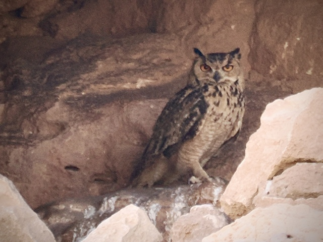
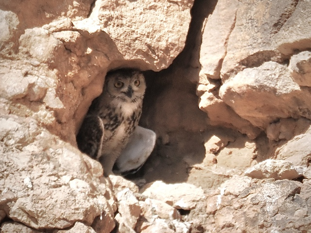
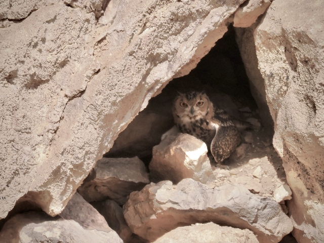

Pharaoh Eagle-Owl
Bubo ascalaphus
Other names: Desert Eagle-Owl
Order: Strigiformes
Family: Strigidae

An apex predator of the desert. Similar to Eurasian Eagle-Owl, with ear tufts and large yellow eyes, but smaller and paler. Female is larger in size.

Male is smaller. Under high heat, even owls have to pant and droop their wings to cool down.

Owls are highly sensitive to human disturbance. They used to be common around this ridge (the hotspot is literally called the Pharaoh Eagle Owl site), but the place has since been overvisited, and the owls moved away. Please keep quiet and keep at a distance when watching owls...